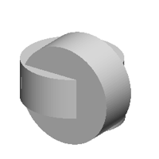
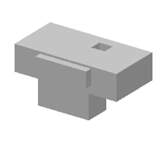

| 정답 |  | | |
| 0 | — | 실행 실패
StdFail_NotDone: GC_MakeArcOfCircle::Value() - no result
4 째 줄 | 1 import cadquery as cq
2 w0=cq.Workplane('YZ',origin=(53,0,0))
3 w1=cq.Workplane('YZ',origin=(21,0,0))
4 r=w0.sketch().segment((17,15),(21,15)).arc((20,17),(19,19)).close().assemble().finalize().extrude(-153).union(w0.sketch().segment((19,15),(21,15)).arc((20,17),(19,19)).close().assemble().finalize().extrude(-107)).union(w1.sketch().arc((19,15),(20,17),(21,19)).segment((19,19)).close().assemble().finalize().extrude(7)) |
| 250 | — | 실행 실패
SyntaxError: invalid syntax. Perhaps you forgot a comma?
1 째 줄 19 째 글자 | 1 cylinder(311.1), (0.0.0.0.0.0.0.0.0.0.0.0.0.0.0.0.0.0.0.0.0.0.0.0.0.0.0.0.0.0.0.0.0.0.0.0.0.0.0.0.0.0.0.0.0.0.0.0.0.0.0.0.0.0.0.0.0.0.0.0.0.0.0.0.0.0.0.0.0.0.0.0.0.0.0.0.0.0.0.0.0.0.0.0.0.0.0.0.0.0.0.0.0.0.0.0.0.0.0.0.0.0.0.0.0.0.0.0.0.0.0.0.0.0.0.0.0.0.0.0.0.0.0.0.0.0.0.0.0.0.0.0.0.0.0.0.0.0.0.0.0.0.0.0.0.0.0.0.0.0.0.0.0.0.0.0.0.0.0.0.0.0.0.0.0.0.0.0.0.0.0.0.0.0.0.0.0.0.0.0.0.0.0.0.0.0.0.0.0.0.0.0.0.0.0.0.0.0.0.0.0.0.0.0.0.0.0.0.0.0.0.0.0.0.0.0.0.0.0.0.0.0.0.0.0.0.0.0.0.0.0.0.0.0.0.0.0.0.0.0.0.0.0.0.0.0.0.0.0.0.0.0.0.0.0.0.0.0.0.0.0.0.0.0.0.0.0.0.0.0.0.0.0.0.0.0.0.0.0.0.0.0.0.0.0.0.0.0.0.0.0.0.0.0.0.0.0.0.0.0.0.0.0.0.0.0.0.0.0.0.0.0.0.0.0.0.0.0.0.0.0.0.0.0.0.0.0.0.0.0.0.0.0.0.0.0.0.0.0.0.0.0.0.0.0.0.0.0.0.0.0.0.0.0.0.0.0.0.0.0.0.0.0.0.0.0.0.0.0.0.0.0.0.0.0.0.0.0.0.0.0.0.0.0.0.0.0.0.0.0.0.0.0.0.0.0.0.0.0.0.0.0.0.0.0.0.0.0.0.0.0.0.0.0.0.0.0.0.0.0.0.0.0.0.0.0.0.0.0.0.0.0.0.0.0.0.0.0.0.0.0.0.0.0.0.0.0.0.0.0.0.0.0.0.0.0.0.0.0.0.0.0.0.0.0.0.0.0.0.0.0.0.0.0.0.0.0.0.0.0.0.0.0.0.0.0.0.0.0.0.0.0.0.0.0.0.0.0.0.0.0.0.0.0.0.0.0. ^ |
| 500 | — | 실행 실패
SyntaxError: '(' was never closed
3 째 줄 45 째 글자 | 1 b0 = place(cq.Workplane("XY").box(100.0, 50.5, 40.0, centered=(True, True, False)).faces(">Z").workplane(origin=(0, 0, 0)).faces(">Z").workplane(origin=(0, 0, 40.1)).center(10.0, 10.0).hole(16.0, 10.0), "y", (0.0, -10.0, -19.0))
2 b1 = place(cq.Workplane("XY").box(100.0, 50.5, 40.0, centered=(True, True, False)).faces(">Z").workplane(origin=(0, 0, 40.1)).center(11.0).faces(">Z").workplane(origin=(0, 0, 40.1)).center(16.0, -10.0).hole(10.0), "y", (0.0, -10.0, -19.0))
3 result = b0.union(b1.union(b2.union(b2.union(b2.union(b2.union(b2.union(b2))) ^ |
| 750 | — | 실행 실패
SyntaxError: invalid syntax. Perhaps you forgot a comma?
2 째 줄 12 째 글자 | 1 b0 = place(cq.Workplane("XZ").polyline([(0.0, 0.0), (24.0, 0.0), (24.0, 19.1), (18.0, 19.1), (18.0, 20.1), (0.0, 20.1)]).close().revolve(360, (0, 0, 0), (0, 1, 0)), "z", (19.0, 0.0, 19.0))
2 b1 = place(cq.Workplane("XY").add(cq.Workplane("XZ").polyline([(0.0, 0.0), (24.0, 0.0), (24.0, 19.1), (18.0, 19.1), (18.0, 20.1), (0.0, 20.1)]).close().revolve(360, (0, 0, 0), (0, 1, 0)), "z", (19.0, 0.0, -19.0)) ^
3 b2 = place(cq.Workplane("XY").add(cq.Workplane("XZ").polyline([(0.0, 0.0), (24.0, 0.0), (24.0, 19.1), (18.0, 19.1), (18.0, 20.0), (0.0, 20.0)]).close().revolve(360, (0, 0, 0), (0, 1, 0)), "z", (-19.0, 0.0, -19.0))
4 b2 = place(cq.Workplane("XY").add(cq.Workplane("XZ").polyline([(0.0, 0.0), (24.0, 0.0), (24.0, 19.1), (18.0, 19.1), (18.0, 20.0), (0.0, 20.0), (0.0, 19.1), (0.0, 19.1), (0.0, 20.1), (0.0, 20.1), (0.0, 20.1), (0.0, 20.1), (0.0, 20.1), (0.0, 20.1), (0.0, 20.1), (0.0, 20.1), (0.0, 20.1), (0.0, 20.1), (0.0, 20.1), (0.0, 20.1), (0.0, 20.1), (0.0, 20.1), (0.0, 20.1), (0.0, 20.1), (0.0, 20.1), (0.0, 20.1), (0.0, 20.1), (0.0, 20.1), (0.0, 20.1), (0.0, 20.1), (0.0, 20.1), (0.0, 20.1), (0.0, 20.1), (0.0, 20.1), (0.0, 20.1), (0.0, 20.1), (0.0, 20.1), (0.0, 20.1), (0.0, 20.1), (0.0, 20.1), (0.0, 20.1), (0.0, 20.1), (0.0, 20.1), (0.0, 20.1), (0.0, 20.1), (0.0, 20.1), (0.0, 20.1), (0.0, 20.1), (0.0, 20.1), (0.0, 20.1), (0.0, 20.1), (0.0, 20.1), (0.0, 20.1), (0.0, 20.1), |
| 1000 | — | 실행 실패
NameError: name 'b3' is not defined
4 째 줄 | 1 b0 = place(cq.Workplane("XZ").polyline([(0.0, 0.0), (29.0, 0.0), (29.0, 22.3), (20.0, 22.3), (20.0, 8.8), (0.0, 8.8)]).close().revolve(360, (0, 0, 0), (0, 1, 0)).faces(">Z").workplane(origin=(0, 0, 22.3)).center(-1.5, 1.1).rect(11.9, 10.8).cutBlind(-16.6), "z", (0.0, -11.1, 0.0))
2 b1 = place(cq.Workplane("XZ").polyline([(0.0, 0.0), (29.0, 0.0), (29.0, 22.3), (18.0, 22.3), (18.0, 10.8), (0.0, 10.8)]).close().revolve(360, (0, 0, 0), (0, 1, 0)).faces(">Z").workplane(origin=(0, 0, 22.3)).center(-1.5, -1.4).rect(10.9, 10.8).cutBlind(-16.1), "z", (0.0, -11.1, 0.0))
3 b2 = place(cq.Workplane("XZ").polyline([(0.0, 0.0), (29.0, 0.0), (29.0, 22.3), (18.0, 22.3), (18.0, 10.8), (0.0, 10.8)]).close().revolve(360, (0, 0, 0), (0, 1, 0)).faces(">Z").workplane(origin=(0, 0, 22.3)).center(-1.5, -1.4).rect(10.9, 10.8).cutBlind(-16.1), "z", (0.0, -11.1, 0.0))
4 result = b0.union(b1.union(b2.union(b3))) |
| 1250 | — | 실행 실패
NameError: name 'b3' is not defined
4 째 줄 | 1 b0 = place(cq.Workplane("XZ").polyline([(0.0, 0.0), (29.1, 0.0), (29.1, 22.2), (20.1, 22.2), (20.1, 8.8), (0.0, 8.8)]).close().revolve(360, (0, 0, 0), (0, 1, 0)).faces(">Z").workplane(origin=(0, 0, 22.2)).center(-1.9, 1.2).hole(11.1, 10.8).faces(">Z").workplane(origin=(0, 0, 22.2)).center(-1.0, 1.1).hole(11.9, 10.8), "z", (0.0, 0.0, 0.0))
2 b1 = place(cq.Workplane("XZ").polyline([(0.0, 0.0), (29.1, 0.0), (29.1, 19.9), (18.1, 19.9), (18.1, 5.3), (0.0, 5.3)]).close().revolve(360, (0, 0, 0), (0, 1, 0)).faces(">Z").workplane(origin=(0, 0, 19.9)).center(-1.9, 1.4).hole(10.2, 10.8), "z", (0.0, 0.0, -10.9))
3 b2 = place(cq.Workplane("XZ").polyline([(0.0, 0.0), (29.1, 0.0), (29.1, 19.9), (18.1, 19.9), (18.1, 35.9), (0.0, 35.9)]).close().revolve(360, (0, 0, 0), (0, 1, 0)).faces(">Z").workplane(origin=(0, 0, 35.9)).center(-1.9, 1.4).hole(10.2, 10.8), "x", (0.0, 0.0, -10.9))
4 result = b0.union(b1.union(b2.union(b3))) |
| 1500 | — | 실행 실패
NameError: name 'b4' is not defined
5 째 줄 | 1 b0 = place(cq.Workplane("XZ").polyline([(0.0, 0.0), (20.0, 0.0), (18.0, 8.8), (16.0, 17.1), (12.0, 22.1), (7.9, 26.8), (3.0, 30.0), (0.0, 31.0)]).close().revolve(360, (0, 0, 0), (0, 1, 0)), "z", (1.0, 19.0, 11.8))
2 b1 = place(cq.Workplane("XZ").polyline([(0.0, 0.0), (20.0, 0.0), (19.0, 8.8), (17.0, 15.1), (14.0, 22.1), (9.9, 26.8), (0.0, 27.0)]).close().revolve(360, (0, 0, 0), (0, 1, 0)), "z", (-19.0, 19.0, 19.0))
3 b2 = place(cq.Workplane("XZ").polyline([(0.0, 0.0), (20.0, 0.0), (20.0, 13.1), (15.0, 13.1), (15.0, 5.8), (0.0, 5.8)]).close().revolve(360, (0, 0, 0), (0, 1, 0)), "z", (-19.0, 19.0, 19.0))
4 b3 = place(cq.Workplane("XZ").polyline([(0.0, 0.0), (20.0, 0.0), (20.0, 13.1), (16.0, 13.1), (16.0, 5.8), (0.0, 5.8)]).close().revolve(360, (0, 0, 0), (0, 1, 0)), "z", (19.0, 19.0, 19.0))
5 result = b0.union(b1.union(b2.union(b3.union(b4)))) |
| 1750 | — | 실행 실패
NameError: name 'b2' is not defined
5 째 줄 | 1 b0 = place(cq.Workplane("XZ").polyline([(0.0, 0.0), (29.1, 0.0), (29.1, 23.3), (18.1, 23.3), (18.1, 10.1), (0.0, 10.1)]).close().revolve(360, (0, 0, 0), (0, 1, 0)), "z", (21.1, -19.5, 0.0))
2 b1 = place(cq.Workplane("XY").box(62.8, 31.1, 21.4, centered=(True, True, False)).faces(">Z").workplane(origin=(0, 0, 21.4)).center(-1.5, 1.1).hole(11.9, 10.2).faces(">Z").workplane(origin=(0, 0, 21.4)).center(-1.0, -1.1).hole(6.8), "z", (-19.5, -19.5, 0.0))
3 b3 = place(cq.Workplane("XY").box(50.0, 67.1, 14.7, centered=(True, True, False)).faces(">Z").workplane(origin=(0, 0, 14.7)).center(11.0, 10.2).hole(11.9, 10.2), "x", (21.1, 19.5, 0.0))
4 b3 = place(cq.Workplane("XY").box(62.8, 31.1, 14.4, centered=(True, True, False)).faces(">Z").workplane(origin=(0, 0, 14.4)).center(11.0, -19.5).hole(11.9, 11.2).faces(">Z").workplane(origin=(0, 0, 14.4)).center(-1.5, -1.1).hole(6.6), "z", (-19.5, -19.5, 0.0))
5 result = b0.union(b1.union(b2.union(b3.union(b4)))) |
| 2000 |  | IoU 0.61 | 1 b0 = place(cq.Workplane("XY").circle(29.0).extrude(23.7).faces(">Z").workplane(origin=(0, 0, 23.7)).center(1.3, 1.4).rect(11.8, 10.1).cutBlind(-11.1), "y", (0.0, -10.5, 0.0))
2 b1 = place(cq.Workplane("XY").circle(29.0).extrude(23.7), "z", (-10.0, 0.0, 0.0))
3 b2 = place(cq.Workplane("XZ").polyline([(0.0, 0.0), (10.0, 0.0), (10.0, 10.1), (7.5, 10.1), (7.5, 33.1), (0.0, 33.1)]).close().revolve(360, (0, 0, 0), (0, 1, 0)).faces(">Z").workplane(origin=(0, 0, 33.1)).center(-1.0, -1.2).hole(10.2, 11.1), "x", (0.0, -10.5, 0.0))
4 b3 = place(cq.Workplane("XY").circle(21.3).extrude(22.7).faces(">Z").workplane(origin=(0, 0, 22.7)).center(1.9, -1.2).hole(5.8).faces(">Z").workplane(origin=(0, 0, 22.7)).center(1.9, -1.2).hole(8.2), "z", (0.0, 0.0, -10.5))
5 result = b0.union(b1.union(b2.union(b3))) |
| 2250 | — | 실행 실패
SyntaxError: '(' was never closed
4 째 줄 11 째 글자 | 1 b0 = place(cq.Workplane("XY").box(67.1, 31.9, 24.7, centered=(True, True, False)), "x", (-15.1, -12.1, 24.7))
2 b1 = place(cq.Workplane("XZ").polyline([(0.0, 0.0), (20.0, 0.0), (20.0, 11.9), (12.0, 11.9), (12.0, 31.9), (0.0, 31.9)]).close().revolve(360, (0, 0, 0), (0, 1, 0)).faces(">Z").workplane(origin=(0, 0, 31.9)).center(-11.1, 11.1).hole(12.9, 15.1).faces(">Z").workplane(origin=(0, 0, 31.9)).center(11.1, -12.1).hole(12.9, 15.1), "x", (-15.1, -12.1, 24.7))
3 b2 = place(cq.Workplane("XZ").polyline([(0.0, 0.0), (10.0, 0.0), (10.0, 10.9), (9.0, 10.9), (9.0, 21.9), (0.0, 21.9)]).close().revolve(360, (0, 0, 0), (0, 1, 0)).faces(">Z").workplane(origin=(0, 0, 21.9)).center(-11.1, 11.1).hole(12.9, 15.1), "y", (-15.1, 21.7, 24.7))
4 b3 = place(cq.Workplane("XY").add(cq.Workplane("XZ").polyline([(0.0, 0.0), (10.0, 0.0), (10.0, 10.9), (9.0, 10.9), (9.0, 21.9), (0.0, 21.9)]).close().revolve(360, (0, 0, 0), (0, 1, 0)).faces(">Z").workplane(origin=(0, 0, 21.9)).center(-11.1, 11.1).hole(12.9, 15.7).faces(">Z").workplane(origin=(0, 0, 21.9)).center(-11.1, 11.1).rect(12.1, 10.9).cutBlind(-15.1), "z", (0.0, 21.7, 24.7)) ^
5 result = b0.union(b1.union(b2.union(b3.union(b4)))) |
| 2400 |  | IoU 0.66 | 1 b0 = place(cq.Workplane("XY").box(100.0, 50.1, 24.7, centered=(True, True, False)).faces(">Z").workplane(origin=(0, 0, 24.7)).center(11.1, 10.1).hole(11.9, 11.1).faces(">Z").workplane(origin=(0, 0, 24.7)).center(11.1, 10.1).rect(12.9, 11.9).cutBlind(-11.1), "z", (0.0, 0.0, 11.7))
2 b1 = place(cq.Workplane("XY").box(50.0, 39.7, 24.7, centered=(True, True, False)).faces(">Z").workplane(origin=(0, 0, 24.7)).center(-11.1, 10.1).hole(11.9, 10.1), "y", (-11.1, 0.0, -11.7))
3 b2 = place(cq.Workplane("XY").box(50.0, 39.9, 14.7, centered=(True, True, False)).faces(">Z").workplane(origin=(0, 0, 14.7)).center(11.1, 10.1).rect(12.9, 11.9).cutBlind(-11.1), "z", (0.0, -11.7, 14.7))
4 b3 = place(cq.Workplane("XY").box(50.0, 39.9, 14.7, centered=(True, True, False)).faces(">Z").workplane(origin=(0, 0, 14.7)).center(-11.1, 10.1).hole(11.9, 10.7), "y", (-11.1, 0.0, -11.7))
5 result = b0.union(b1.union(b2.union(b3))) |